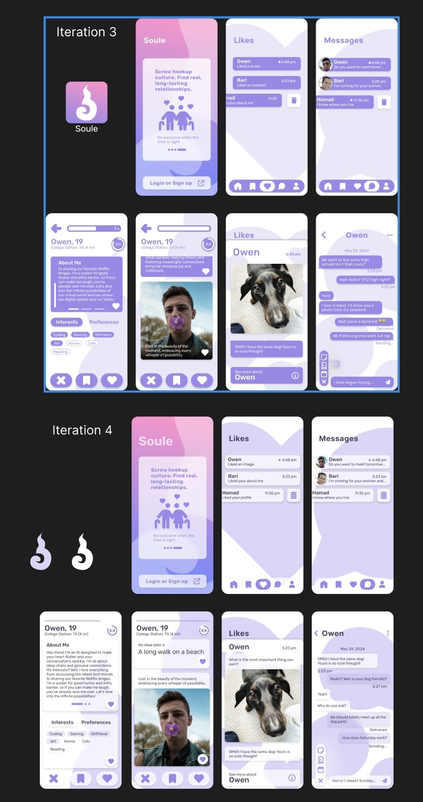
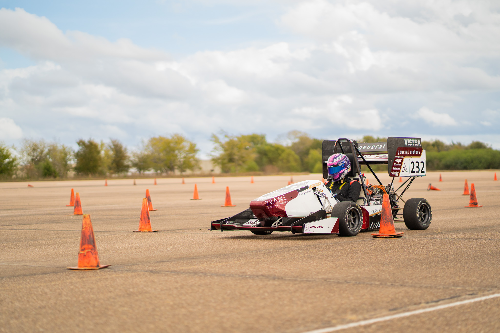

Here, you'll find an overview of the projects I've worked on, showcasing my technical skills and creativity. From innovative AI-powered solutions to full-stack development projects, these highlight my passion for solving complex problems.

Soule is an innovative dating app designed to foster meaningful and long-lasting relationships by moving beyond traditional swipe-based interactions. The app integrates advanced matching algorithms and real-time user feedback to create a tailored dating experience. Soule challenges the norms of hookup culture by prioritizing compatibility, personality, and genuine connections.
Learn More About Soule
Roadrunner is a real-time embedded telemetry system designed to monitor and optimize the performance of the car. The system collects data on various vehicle parameters, such as speed, temperature, and battery status, and provides real-time feedback to the driver and team.
Learn More About RoadrunnerThe AI Fraud Detection system is an advanced machine learning platform designed to identify and prevent fraudulent activities in real time. By analyzing patterns and anomalies in large datasets, this software can accurately detect potential fraud, helping organizations mitigate risks and reduce financial losses.
Learn More About CLAIMSThe Tesseract leverages AI to match candidates with roles that align with their skills and aspirations, integrating behavioral assessments and career path insights.
Learn More About The Tesseract